97 项旧技能，91 张专属图标。另有两张电子烟状态图已沿用。本页是作者审阅，不是当前游戏技能列表。默认按 56×56 原尺寸显示；名称、机制和图标分别评估。本轮没有生图或修改游戏包。
主动指挥 · 旧归属 C01 阿飞
阿飞：哇哇叫沿用现版自身强化；嘉豪的伙伴成长反馈可保留主题，但旧上限累加决心 +64、疲劳 +32，九星后应重新定上限。蛤蟆逃生可作分支候选。全力圈保留当前契约收入含义，旧回疲劳大招不能覆盖。
旧效果与费用（历史设计）
4行动点、16疲劳、1次团队号令，自身与三格内可行动友军获得决心加成两轮。加成为6＋向下取整的（阿飞永久决心－20）÷5，最低6、最高20；永久决心只含基础、升级和一次性成长，不含装备、士气、旗帜及临时增益。它提高后续检定基础，不直接提升当前士气等级。
成长被动 · 旧归属 C01 阿飞
阿飞：哇哇叫沿用现版自身强化；嘉豪的伙伴成长反馈可保留主题，但旧上限累加决心 +64、疲劳 +32，九星后应重新定上限。蛤蟆逃生可作分支候选。全力圈保留当前契约收入含义，旧回疲劳大招不能覆盖。
旧效果与费用（历史设计）
阿飞仍在名册时，每位不同命名伙伴首次完成个人成长，给予他永久决心＋4、最大疲劳＋2，最多记录16人。抹茶、大谋计入，阿飞本人的成长与普通雇员不计；单纯签约不加点。已获得的奖励不因伙伴后来离队收回，死亡后不再新增。
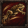
阿飞
蛤蟆
toad_escape主动自保 · 旧归属 C01 阿飞
阿飞：哇哇叫沿用现版自身强化；嘉豪的伙伴成长反馈可保留主题，但旧上限累加决心 +64、疲劳 +32，九星后应重新定上限。蛤蟆逃生可作分支候选。全力圈保留当前契约收入含义，旧回疲劳大招不能覆盖。
旧效果与费用（历史设计）
3行动点、10疲劳，每战一次。生命不高于最大值50%，或邻接至少两名敌人时，可移至相邻同高合法空地，免除此步的脱离攻击。自己须可行动且未被定身；不穿过单位、墙壁，不解除网缚，也不回复生命。
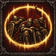
阿飞
全力圈
full_circle终局指挥 · 旧归属 C01 阿飞
阿飞：哇哇叫沿用现版自身强化；嘉豪的伙伴成长反馈可保留主题，但旧上限累加决心 +64、疲劳 +32，九星后应重新定上限。蛤蟆逃生可作分支候选。全力圈保留当前契约收入含义，旧回疲劳大招不能覆盖。
旧效果与费用（历史设计）
满足终极觉醒后获得。4行动点、30疲劳、1次团队号令，每战一次，自身与四格内可行动友军立即恢复20点已积累疲劳，并获得决心＋20两轮。恢复前必须能支付自身30疲劳；受益者在效果到期时追加10疲劳，战斗结束或该受益者离场则清除未到期后劲。无行动点回复。
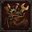
午夜抹抹茶
地精出身
scrap_parts后勤被动 · 旧归属 C02 抹茶
午夜抹抹茶：标记敌人、给队友节省武器疲劳很符合后排队长；地精出身依赖旧营地手动维修，应改接现有维修消耗记录后再启用。
旧效果与费用（历史设计）
抹茶在名册时，每累计实际消耗7点工具用于营地维修，获得1次余料减免，最多存3次。下次至少原需2工具的合法维修自动少耗1工具，并消耗一次减免；实际支付的工具才进入下一轮累计。不能修满耐久装备刷数；余料不变成背包物品。
主动标记 · 旧归属 C02 抹茶
午夜抹抹茶：标记敌人、给队友节省武器疲劳很符合后排队长；地精出身依赖旧营地手动维修，应改接现有维修消耗记录后再启用。
旧效果与费用（历史设计）
3行动点、10疲劳，给四格内一名可见敌人记账。下一次友军对该目标的单体武器攻击命中＋10，无论命中与否都耗掉标记；持续两轮，冷却两轮。抹茶同时只保留一组记账，新施放替换旧组。

午夜抹抹茶
幕后队长
shadow_captain主动指挥 · 旧归属 C02 抹茶
午夜抹抹茶：标记敌人、给队友节省武器疲劳很符合后排队长；地精出身依赖旧营地手动维修，应改接现有维修消耗记录后再启用。
旧效果与费用（历史设计）
4行动点、15疲劳、1次团队号令。指定四格内最多两名可行动友军，其下一次武器技能的疲劳成本减少8，最低0；两轮未使用则消失。同一人只存一份费用优惠，不能优惠另一项号令。

王大谋
偷大哥
steal_bro招募技巧 · 旧归属 C03 王大谋
王大谋：偷大哥只给已解锁候选折扣，不绕过当前招募队列和冷却。大哥借我要求友军永久近攻更高，开局大谋已最强，早期常无目标；建议改成可稳定使用的持盾协作。一起抬保留团队站位主题，攻防数值另调。
旧效果与费用（历史设计）
每七日可谈成一次引荐，耗时2小时。为一名已经满足招募条件的候选人保留八折签约价，最多省200克朗；只保留一个报价，签约才算成功并开始七日冷却。更换未签报价仍须重新花2小时，不能凭空转移其他队伍的人或装备。
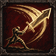
王大谋
大哥借我
borrow_strike主动取经 · 旧归属 C03 王大谋
王大谋：偷大哥只给已解锁候选折扣，不绕过当前招募队列和冷却。大哥借我要求友军永久近攻更高，开局大谋已最强，早期常无目标；建议改成可稳定使用的持盾协作。一起抬保留团队站位主题，攻防数值另调。
旧效果与费用（历史设计）
2行动点、8疲劳，向三格内一名永久近攻高于自己的友军借招。接下来的两次单体近战武器攻击，命中增加双方永久近攻差，最多＋10；两轮后失效，冷却三轮。加成在施放时固定，不能复制临时增益或借招结果。
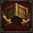
王大谋
一起抬
together_lift队形被动 · 旧归属 C03 王大谋
王大谋：偷大哥只给已解锁候选折扣，不绕过当前招募队列和冷却。大哥借我要求友军永久近攻更高，开局大谋已最强，早期常无目标；建议改成可稳定使用的持盾协作。一起抬保留团队站位主题，攻防数值另调。
旧效果与费用（历史设计）
两格内至少有两名其他可行动友军时，近战护甲伤害＋10%，近战武器技能的疲劳成本减少2，最低0。按每次出手时的站位判断；费用优惠与其他技能取最高一份。此效果不再动态改变最大疲劳。
主动武器技 · 旧归属 C04 小酒瓶
小酒瓶：最贴合九星近战核心的一组。突破保留攻击后近防代价，决赛保留后程增伤与额外疲劳，接球鼓励集火配合；九星后重新校准命中增益，不能同时反复叠加。
旧效果与费用（历史设计）
4行动点、18疲劳，使用当前单手近战武器的基础单体攻击打邻接敌人，命中＋10；按该基础攻击的伤害、护甲效率和命中部位结算。攻击后近防－5至下次自身行动开始，冷却两轮。技能费用替代该次基础攻击费用，不能套用双手武器。

小酒瓶
决赛时刻
finals_moment后程被动 · 旧归属 C04 小酒瓶
小酒瓶：最贴合九星近战核心的一组。突破保留攻击后近防代价，决赛保留后程增伤与额外疲劳，接球鼓励集火配合；九星后重新校准命中增益，不能同时反复叠加。
旧效果与费用（历史设计）
从第五轮开始，单体近战武器伤害＋10%，每次此类攻击额外积累3疲劳。只作用于实际出手，战后清除。等待本身不会增加层数，收不收残局仍由玩家判断。
配合被动 · 旧归属 C04 小酒瓶
小酒瓶：最贴合九星近战核心的一组。突破保留攻击后近防代价，决赛保留后程增伤与额外疲劳，接球鼓励集火配合；九星后重新校准命中增益，不能同时反复叠加。
旧效果与费用（历史设计）
每轮第一次攻击本轮已被另一名友军单体武器攻击命中的敌人时，命中＋5。按真实敌对目标记录，范围擦伤、持续伤害与友军误伤不算；每轮最多一次。

李李超欧
无法选中
unselectable主动避险 · 旧归属 C05 李李超欧
李李超欧：图标和个人梗都清晰；无法选中牵涉敌方目标选择，欧气牵涉检定重掷，不宜首批移植。先采用有明确次数上限的被动。
旧效果与费用（历史设计）
4行动点、20疲劳，每战一次，须没有邻接敌人。至下次自身行动开始，每当敌方选取单体技能目标，若还有另一名满足该技能全部选取条件的己方佣兵，李李从候选中排除；没有替代合法目标时正常可选。范围攻击、误射与地形伤害照常，主动攻击前解除。

李李超欧
超巨
chaoju聚光被动 · 旧归属 C05 李李超欧
李李超欧：图标和个人梗都清晰；无法选中牵涉敌方目标选择，欧气牵涉检定重掷，不宜首批移植。先采用有明确次数上限的被动。
旧效果与费用（历史设计）
每轮第一次对真实敌人的武器命中获得1层聚光，每轮第一次未命中失去1层；各结算一次，按先后顺序处理，最多3层。每层远攻＋3、决心＋3；所有层数战后清除。范围伤害与持续伤害不触发。

李李超欧
欧气
ouqi士气被动 · 旧归属 C05 李李超欧
李李超欧：图标和个人梗都清晰；无法选中牵涉敌方目标选择，欧气牵涉检定重掷，不宜首批移植。先采用有明确次数上限的被动。
旧效果与费用（历史设计）
每场第一次普通士气检定失败时，自动按同一概率重掷一次，采用第二次结果。先记录本次机会已消耗，再重掷；不重掷伤害、掉落、控制抗性或死亡判定。
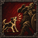
余初九
狗叫
dog_bark主动干扰 · 旧归属 C06 余初九
余初九：符合高先攻九星近战救场者。狗叫保留种族和精神免疫边界，忠诚只对当前出战核心判定；换位须检查网、眩晕、地形和双方位置。
旧效果与费用（历史设计）
3行动点、12疲劳，对三格内可见的人类或绿皮敌人施加近攻－8，至该敌人下一次行动结束；冷却两轮。一次技能可影响其该次行动中的多次近战攻击。亡灵、野兽和精神干扰免疫者无效，同类削弱取最强一份。

余初九
忠诚
loyalty护团被动 · 旧归属 C06 余初九
余初九：符合高先攻九星近战救场者。狗叫保留种族和精神免疫边界，忠诚只对当前出战核心判定；换位须检查网、眩晕、地形和双方位置。
旧效果与费用（历史设计）
距本场护团中心两格内，余九决心＋10。中心优先为可行动的阿飞；他未出战、逃跑或失去行动能力时，切换为战前指定的代理队长。每轮中心第一次被敌方武器命中后，若余九当时在范围内，她近防＋4至轮末。没有有效中心则不触发。
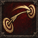
余初九
护团换位
guard_swap主动救援 · 旧归属 C06 余初九
余初九：符合高先攻九星近战救场者。狗叫保留种族和精神免疫边界，忠诚只对当前出战核心判定；换位须检查网、眩晕、地形和双方位置。
旧效果与费用（历史设计）
3行动点、15疲劳，每战一次，与相邻己方佣兵交换位置，双方免除此次移动的脱离攻击。两人均须可行动、未被定身，且互换后两处地块均可合法站立。不会解除眩晕、网缚或伤势；路径不成立时不扣费。

小月牙
超市里
supermarket补给技巧 · 旧归属 C07 小月牙
小月牙：采购、换目标、士气保护有区分度；采购折扣需要接当前原版商店并防取消交易消耗次数，不能恢复旧黑旗办理入口。
旧效果与费用（历史设计）
每个游戏日一次，主动选定商店当前确有库存的一笔食物购买，价格降低15%，最多省30克朗，成交价向上取整。同类折扣取最高值；取消交易不消耗次数，成功成交才计入当日记录。
变招被动 · 旧归属 C07 小月牙
小月牙：采购、换目标、士气保护有区分度；采购折扣需要接当前原版商店并防取消交易消耗次数，不能恢复旧黑旗办理入口。
旧效果与费用（历史设计）
若本次远程武器攻击的目标不同于自己上一次远程武器攻击的目标，命中＋8，每轮最多触发一次。首发没有上次目标，不触发；同轮可以换目标，跨轮也保留最近目标，战后清空。记录的是尝试攻击，不要求上一次命中。
士气被动 · 旧归属 C07 小月牙
小月牙：采购、换目标、士气保护有区分度；采购折扣需要接当前原版商店并防取消交易消耗次数，不能恢复旧黑旗办理入口。
旧效果与费用（历史设计）
每场第一次普通士气检定失败时，消耗一次乐天派并保持检定前的士气等级。一次只取消这次下降，后续独立检定照常；不移除已经存在的逃跑、魅惑或恐惧技能状态。

小鱼贝壳
唯一的男人
only_man接应被动 · 旧归属 C08 小鱼贝壳
小鱼贝壳：生命九星适合顶住缺口。被动近防 +6 需结合九星和盾牌重评；尼古丁是疲劳预支，不能与阿飞电子烟回血混写；顶上去须按实际武器攻击重定向，首批可先做明确的护卫效果。
旧效果与费用（历史设计）
邻接一名可行动且未持盾的伙伴，或邻接自己顶上去的受护者时，小鱼近防＋6。按当前副手装备与有效守护状态判断，人数不叠加，也不要求队友先受伤。名字沿用营中绰号，技能按装备与站位结算。
主动预支 · 旧归属 C08 小鱼贝壳
小鱼贝壳：生命九星适合顶住缺口。被动近防 +6 需结合九星和盾牌重评；尼古丁是疲劳预支，不能与阿飞电子烟回血混写；顶上去须按实际武器攻击重定向，首批可先做明确的护卫效果。
旧效果与费用（历史设计）
2行动点、0疲劳，每战一次，立即移除15点已积累疲劳。随后两次自身行动开始的正常疲劳恢复各减少5，最低恢复0；没有可恢复的疲劳时不可发动。未偿还部分在战斗结束清除，不产生物品。
主动拦截 · 旧归属 C08 小鱼贝壳
小鱼贝壳：生命九星适合顶住缺口。被动近防 +6 需结合九星和盾牌重评；尼古丁是疲劳预支，不能与阿飞电子烟回血混写；顶上去须按实际武器攻击重定向，首批可先做明确的护卫效果。
旧效果与费用（历史设计）
4行动点、20疲劳，持盾指定一名相邻伙伴，自己保持原地至下次行动开始。期间该伙伴首次遭受单体近战武器攻击时，若攻击者也能用同一技能合法攻击小鱼，改以小鱼为目标，用她的防御、护甲重新结算，并令该击生命伤害减少15%。每次施放仅拦一击，尝试即消耗；冷却三轮。失去邻接、受护者离场，或小鱼不能行动、失去盾、被迫移动时，守护结束。

白小帅子
小心脏
small_heart条件被动 · 旧归属 C09 白小帅子
白小帅子：胆小但可靠的持盾风格清楚；打鼓应与现版阿飞号令统一持续时间和叠加规则，守门需要持盾及禁止移动。
旧效果与费用（历史设计）
两格内没有其她可行动友军时决心－8；持盾且邻接可行动友军时近防＋4。两种情况互斥，实时按站位判断；伙伴离场会改变条件，但不会自动触发额外士气检定。

白小帅子
打鼓
drum主动指挥 · 旧归属 C09 白小帅子
白小帅子：胆小但可靠的持盾风格清楚；打鼓应与现版阿飞号令统一持续时间和叠加规则，守门需要持盾及禁止移动。
旧效果与费用（历史设计）
4行动点、16疲劳、1次团队号令，自身与三格内可行动友军获得定拍。每人下一次行动开始额外恢复8疲劳，并在该次行动结束前决心＋5；额外恢复计入该轮20点上限。跳过行动仍结算，已离场者清除，定拍不叠加。
主动守势 · 旧归属 C09 白小帅子
白小帅子：胆小但可靠的持盾风格清楚；打鼓应与现版阿飞号令统一持续时间和叠加规则，守门需要持盾及禁止移动。
旧效果与费用（历史设计）
3行动点、12疲劳，须持盾，至下次自身行动开始不能移动。期间免疫第一次强制推拉位移，但伤害和其她状态照常；本次守势中的第一次普通脱离攻击命中＋10，仍遵守原有控制区与攻击次数规则。冷却两轮。

王怼怼
恐飞派
fear_afei关系被动 · 旧归属 C10 王怼怼
王怼怼：旧恐飞派依赖阿飞群体哇哇叫，现版哇哇叫只强化本人，必须重写关系触发；代理发令和传递增益也须接当前出战者及效果系统。
旧效果与费用（历史设计）
每战第一次成为阿飞号令的受益者，立即恢复8疲劳；本轮下一次武器攻击命中－5，轮末未攻击则清除。主动使用怼一句后也清除这次惩罚。收益计入每轮20点恢复上限，其他人的号令不能冒名触发。
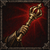
王怼怼
太子发令
prince_order主动指挥 · 旧归属 C10 王怼怼
王怼怼：旧恐飞派依赖阿飞群体哇哇叫，现版哇哇叫只强化本人，必须重写关系触发；代理发令和传递增益也须接当前出战者及效果系统。
旧效果与费用（历史设计）
4行动点、15疲劳、1次团队号令。仅当怼怼是战前指定的代理，且阿飞未出战、逃跑或不能行动时可用。自身与三格内可行动友军决心＋10、近防＋5，持续两轮。阿飞恢复行动只关闭新施放，已有增益正常到期。

王怼怼
怼一句
dui_sentence主动传令 · 旧归属 C10 王怼怼
王怼怼：旧恐飞派依赖阿飞群体哇哇叫，现版哇哇叫只强化本人，必须重写关系触发；代理发令和传递增益也须接当前出战者及效果系统。
旧效果与费用（历史设计）
3行动点、10疲劳，冷却两轮。把自己仍有效的哇哇叫、稳一手或太子发令中的决心和近防加成，转述给三格内一名尚未收到该原始号令的可行动友军，剩余时间保持不变。每条原始号令最多转述给一人；不传递全力圈、定拍、费用优惠或位移免疫，也不消耗新号令。

亿口甜筒
探路
scout_path行军技巧 · 旧归属 C12 小虎
亿口甜筒：保留弓手和接应后排的方向；探路需对接原版护送契约，掩护箭要验证真实射击与脱离豁免，不能复制旧任务系统。
旧效果与费用（历史设计）
每七日一次，花2小时调查一份已经接下的护送契约，揭示路线上的一项实际危险线索；优先揭示已存在的敌对活动，其次为难行路段。无新线索则不收费也不进入冷却。消息记查明时刻，之后变化的敌人位置不会自动更新。

亿口甜筒
回头箭
return_arrow站位被动 · 旧归属 C12 小虎
亿口甜筒：保留弓手和接应后排的方向；探路需对接原版护送契约，掩护箭要验证真实射击与脱离豁免，不能复制旧任务系统。
旧效果与费用（历史设计）
本轮完成至少两格普通移动后，第一次远程武器攻击命中＋7，每轮一次。换位、被推拉和专属位移不计步数；仍支付原武器费用，不能用原地来回获得永久增益。
主动掩护武器技 · 旧归属 C12 小虎
亿口甜筒：保留弓手和接应后排的方向；探路需对接原版护送契约，掩护箭要验证真实射击与脱离豁免，不能复制旧任务系统。
旧效果与费用（历史设计）
4行动点、18疲劳，消耗一发弹药，须持弓。选择二至四格内可见且射线合法的敌人，以及其相邻的一名伙伴，进行一次普通弓箭攻击，生命与护甲伤害均为该次攻击的50%。无论是否命中，该伙伴下次单格移动离开此敌人控制区时，免除仅来自此敌人的脱离攻击。标记至伙伴下一次行动结束失效，冷却三轮；不解除定身。
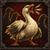
大鹅
鹅势欺人
goose_bully阵形被动 · 旧归属 C13 大鹅
大鹅：守窝与鹅势欺人很适合盾卫；嘎嘎冲会离开阵线，保留为有代价的位移选择。旧守窝只给远防 +6，不能宣传成全方面减伤。
旧效果与费用（历史设计）
至少邻接一名敌人，且邻接可行动友军数量不少于邻接敌人数量时，近攻＋5、决心＋5。每次相关检定即时检查；自己、替补席和远处队友不算人数。

大鹅
嘎嘎冲
gaga_charge主动推进武器技 · 旧归属 C13 大鹅
大鹅：守窝与鹅势欺人很适合盾卫；嘎嘎冲会离开阵线，保留为有代价的位移选择。旧守窝只给远防 +6，不能宣传成全方面减伤。
旧效果与费用（历史设计）
6行动点、22疲劳，冷却三轮。须用单手近战武器，先走到相邻同高、普通移动基础成本不高于2行动点的空格，再对邻接敌人作基础单体攻击，命中－5、护甲伤害＋10%。命中后把普通可推动人形敌人沿远离大鹅方向推一格，仅限同高合法空格；不满足推位条件则只有攻击。移动仍受控制区限制，费用已含一步与一次攻击。

大鹅
守窝
guard_nest主动护卫 · 旧归属 C13 大鹅
大鹅：守窝与鹅势欺人很适合盾卫；嘎嘎冲会离开阵线，保留为有代价的位移选择。旧守窝只给远防 +6，不能宣传成全方面减伤。
旧效果与费用（历史设计）
3行动点、15疲劳，须持盾，保持原地至下次自身行动开始。自己与当前邻接友军远防＋6，离开相邻范围立即失去保护；新进入者可受益。冷却两轮，大鹅失去行动能力、放下盾或被迫离开原格则守窝结束。
主动布置 · 旧归属 C14 小杰
小杰：解网容易形成实用差异；陷阱涉及地块、进出战和工具支付，后续专项实现。不能与自行车行囊物品混淆。
旧效果与费用（历史设计）
4行动点、15疲劳、2工具，在相邻合法空地布置一处绳扣，每战最多布置两次。普通可束缚人形敌人主动踏入时，绳扣消耗并令其本次行动不能继续移动，至该次行动结束解除；仍能在原地攻击。己方安全通过，推拉与传送不触发；巨兽、飞行和束缚免疫者无效，不能放在单位脚下。
抗干扰被动 · 旧归属 C14 小杰
小杰：解网容易形成实用差异；陷阱涉及地块、进出战和工具支付，后续专项实现。不能与自行车行囊物品混淆。
旧效果与费用（历史设计）
抵抗明确属于恐惧或魅惑的技能时，检定采用决心＋15。常规受伤、包围和同伴阵亡导致的士气检定不加；该值只改变这次抗性检定，不转为永久决心，也不保证免疫。
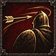
小杰
备用钥匙
spare_key主动解围 · 旧归属 C14 小杰
小杰：解网容易形成实用差异；陷阱涉及地块、进出战和工具支付，后续专项实现。不能与自行车行囊物品混淆。
旧效果与费用（历史设计）
3行动点、10疲劳，解除自己或相邻伙伴的一项网缚，冷却两轮。有网才可发动；不解除眩晕、敌方抓取和永久伤势。自身被网但仍能使用技能时也可自救，之后移动仍需正常成本。

苏袜
踩点
foot_point主动机动 · 旧归属 C15 苏袜
苏袜：最适合现有先攻三星的一组；先攻变化须明确何时生效，不额外赠送行动回合或无限移动。
旧效果与费用（历史设计）
4行动点、12疲劳，冷却两轮，沿合法路线移动一至两格。每步须同高，地形的普通移动基础成本不高于2行动点；受控制区限制，不能越过单位。获得先攻＋15至下一次自身行动结束，成本已含移动，不再另收普通移动疲劳。
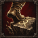
苏袜
抢半步
half_step先手被动 · 旧归属 C15 苏袜
苏袜：最适合现有先攻三星的一组；先攻变化须明确何时生效，不额外赠送行动回合或无限移动。
旧效果与费用（历史设计）
单体武器攻击时，若自己的当前有效先攻高于目标，命中＋5，每轮最多两次。比较数值包含当时装备、已积累疲劳及临时修正；相等不触发，不额外插入行动。

苏袜
急刹
hard_brake主动守势 · 旧归属 C15 苏袜
苏袜：最适合现有先攻三星的一组；先攻变化须明确何时生效，不额外赠送行动回合或无限移动。
旧效果与费用（历史设计）
3行动点、14疲劳，冷却三轮，至下次自身行动开始远防＋12、近防＋4；发动后本次行动不能继续主动移动。被迫移动会提前结束急刹，正常射击仍可进行，其他守势与同类防御加成按共同上限结算。

涂涂
回头路
return_road主动协同撤步 · 旧归属 C16 涂涂
涂涂：断后和共同撤步可以留下；旧磨合与闹别扭系统现版没有，营地能力只保留主题，不能写成现成可用。
旧效果与费用（历史设计）
4行动点、18疲劳，每战一次。自己与一名相邻、可行动且未被定身的伙伴，沿同一方向各移动一格，双方免除此步的脱离攻击，成本全部由涂涂承担。两条路线须同高且相邻可达，按两人同步离开起点后检查空位，不得碰到第三单位；不能穿墙或强制撤离战场。
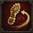
涂涂
离席未散
leave_not_gone断后被动 · 旧归属 C16 涂涂
涂涂：断后和共同撤步可以留下；旧磨合与闹别扭系统现版没有，营地能力只保留主题，不能写成现成可用。
旧效果与费用（历史设计）
本场第一次有己方佣兵成功撤离后，涂涂决心＋10、近防＋5，持续两轮。只触发一次，阵亡、被抓取和暂时换位不算撤离；不会抵消本场撤退的经营与磨合代价。

涂涂
再留一晚
one_more_night营地技巧 · 旧归属 C16 涂涂
涂涂：断后和共同撤步可以留下；旧磨合与闹别扭系统现版没有，营地能力只保留主题，不能写成现成可用。
旧效果与费用（历史设计）
每七日一次，安全扎营花6食物、4小时，磨合＋3，并清除至多两名自选成员的本起源闹别扭标签。没有标签时仍可为磨合使用。不能在追击中发动，也不治疗伤势或清除欠薪、饥饿造成的心情问题。
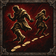
可可
自己人
own_people射击被动 · 旧归属 C17 可可
可可：旧自己人仅减少本人远程误伤，保可梦还奖励远程反击命中，与新矛盾定位不合。建议改邻接或短距护卫、保护成功后恢复疲劳，三个熟悉名字保留。
旧效果与费用（历史设计）
自己的远程武器误射到友军时，该次友军生命与护甲伤害减少50%，向下取整。原来的命中结果、弹药和攻击成本不改，也不会改射中敌人。对主动指定友军的攻击无效；不能用它替代射线判断。

可可
保可梦
pokemon主动守望 · 旧归属 C17 可可
可可：旧自己人仅减少本人远程误伤，保可梦还奖励远程反击命中，与新矛盾定位不合。建议改邻接或短距护卫、保护成功后恢复疲劳，三个熟悉名字保留。
旧效果与费用（历史设计）
4行动点、16疲劳，指定四格内一名其他伙伴，远防＋8，持续两轮，冷却三轮。期间该伙伴遭单体敌方武器攻击后，记住最近那名可见攻击者；可可每轮第一次对当前记录者的远程攻击命中＋8。只保留一名受护者和一个威胁记录，目标或守望失效时记录清除。可可离场、死亡或失去行动能力时，守望整体结束。

可可
松口气
breathe_easy守望被动 · 旧归属 C17 可可
可可：旧自己人仅减少本人远程误伤，保可梦还奖励远程反击命中，与新矛盾定位不合。建议改邻接或短距护卫、保护成功后恢复疲劳，三个熟悉名字保留。
旧效果与费用（历史设计）
保可梦仍有效时，受护者每轮第一次被敌方单体武器攻击且未被命中，可可立即恢复4疲劳。每轮一次，计入20点上限；对方主动闪避仍须按实际命中结果，友军攻击与范围技能不触发。

童猪
小熊出击
bear_strike主动干扰 · 旧归属 C18 童猪
童猪：观察敌人再干扰或支援，有完整的小循环；应共用一个有上限的观察层数，并改接新号令或独立冷却。
旧效果与费用（历史设计）
3行动点、12疲劳、1层看懂，冷却两轮，每战最多两次。对三格内可见的人类或绿皮敌人施加下一次武器攻击命中－10，持续两轮或攻击尝试后消耗；精神干扰免疫者无效。木熊是手中道具，不生成单位或占格。
观察被动 · 旧归属 C18 童猪
童猪：观察敌人再干扰或支援，有完整的小循环；应共用一个有上限的观察层数，并改接新号令或独立冷却。
旧效果与费用（历史设计）
童猪可行动时，四格内可见敌人连续两次使用同一种武器攻击技能时，获得1层看懂，最多2层、每轮最多获得1层。按每个敌人分别记录最近的武器技能，命中与否均记录；非武器行为不提供层数。同一事件只计一次，离开视野期间不补记，战后清空。
主动指挥 · 旧归属 C18 童猪
童猪：观察敌人再干扰或支援，有完整的小循环；应共用一个有上限的观察层数，并改接新号令或独立冷却。
旧效果与费用（历史设计）
4行动点、15疲劳、1次团队号令。指定三格内最多三名可行动友军，自选额外消耗0至2层看懂；每人的下一次武器技能或非指挥专属主动技巧少耗4＋2×所消耗层数的疲劳，最低0，两轮到期。优惠取最高一份，不减少行动点、工具和弹药，不优惠其她号令。
主动挑衅 · 旧归属 C19 奶盖
奶盖：挑衅、防守、闪避后投掷形成独特玩法；挑衅须检查敌人是否真能攻击到奶盖，不让技能变成无风险控场。
旧效果与费用（历史设计）
2行动点、8疲劳，冷却三轮。选择一名邻接、可见且不免疫精神干扰的普通人类敌人；其下一次单体近战武器攻击若能合法攻击奶盖，就必须优先选择她，至该敌人下一次行动结束失效。不强迫移动，不影响远程、范围或特殊能力；目标当前没有合法近战武器攻击时不可发动。

奶盖
缩进奶盖
shrink_cover主动守势 · 旧归属 C19 奶盖
奶盖：挑衅、防守、闪避后投掷形成独特玩法；挑衅须检查敌人是否真能攻击到奶盖，不让技能变成无风险控场。
旧效果与费用（历史设计）
4行动点、18疲劳，须持盾，至下次自身行动开始不能主动移动或攻击，近防＋8。期间前两次直接武器伤害结算到生命的部分减少20%，冷却三轮；持续伤害照常。失去盾、失去行动能力或被迫移动则结束，已触发的返场仍按自身期限保留。
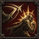
奶盖
抽象整活
abs_comeback返场被动 · 旧归属 C19 奶盖
奶盖：挑衅、防守、闪避后投掷形成独特玩法；挑衅须检查敌人是否真能攻击到奶盖，不让技能变成无风险控场。
旧效果与费用（历史设计）
每轮第一次敌方单体武器攻击未命中自己，或自己在缩进奶盖期间承受此类攻击后存活，获得1层返场，最多存1层。下一次投掷武器攻击命中＋10，尝试后消耗，最迟下一轮末到期。无额外攻击或免费换武器；友军攻击不触发。

余想
五老压阵
five_elder阵形被动 · 旧归属 C20 余想
余想：阵形、坚守、轮换十分贴合；当前长柄定位可做第二线支撑，避免直接复制主盾卫的同类叠加光环。
旧效果与费用（历史设计）
自身邻接至少两名友军时，近防＋4、决心＋6；邻接条件失去立即结束。不会向全队广播，也不增加最大生命。
主动守势 · 旧归属 C20 余想
余想：阵形、坚守、轮换十分贴合；当前长柄定位可做第二线支撑，避免直接复制主盾卫的同类叠加光环。
旧效果与费用（历史设计）
4行动点、18疲劳，冷却两轮。至下次自身行动开始，近防与远防各＋8、先攻－10。期间每轮首次被单体攻击命中后恢复4疲劳；不减免该击伤害。

余想
替班到了
shift_arrive协作被动 · 旧归属 C20 余想
余想：阵形、坚守、轮换十分贴合；当前长柄定位可做第二线支撑，避免直接复制主盾卫的同类叠加光环。
旧效果与费用（历史设计）
每轮一次：自身本次行动开始时，若仍邻接上轮没有邻接过自己的友军，恢复5疲劳。必须有真实位置变化，待机与重复读入战场不算换班。

美伢
大王舞
king_dance主动支援 · 旧归属 C21 美伢
美伢：与高先攻、灵活近战相符，旧图标齐全；舞步和撤步要使用当前安全位移判定，失败不能扣费或漏掉脱离攻击。
旧效果与费用（历史设计）
4行动点、16疲劳，冷却两轮。移至相邻同高合法空地，普通脱离攻击照常触发；移动后相邻的至多两名其他友军获得先攻＋12，持续到各自下次行动结束。不改变本轮已确定的行动顺序。
反应被动 · 旧归属 C21 美伢
美伢：与高先攻、灵活近战相符，旧图标齐全；舞步和撤步要使用当前安全位移判定，失败不能扣费或漏掉脱离攻击。
旧效果与费用（历史设计）
每轮一次，邻接友军对某敌人单体近战未命中后，记录该敌人。自身下次对它的单体近战命中＋6，出手即消耗；标记至本轮结束，最多一个。

美伢
谢幕让位
curtain_yield主动步法 · 旧归属 C21 美伢
美伢：与高先攻、灵活近战相符，旧图标齐全；舞步和撤步要使用当前安全位移判定，失败不能扣费或漏掉脱离攻击。
旧效果与费用（历史设计）
2行动点、8疲劳，每轮一次。仅在本次行动已用单体近战命中后，移至相邻同高合法空地。仅免刚才受击敌人的脱离攻击，其他敌人照常；定身时不可用。
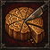
陈知含
月饼帮
moon_cake营地准备 · 旧归属 C22 陈知含
陈知含：营地准备与记住攻击者都很适合生命／决心／近防星位；补给须收费后只给下一战，避免取消或读档重复发放。
旧效果与费用（历史设计）
每72小时一次，消耗6食物与2小时。指定本人和两名在队伙伴，下场出战时前两轮决心＋6；七日未出战则失效，同一人只保留一份月饼准备。

陈知含
这一盾记住了
remember_shield防御被动 · 旧归属 C22 陈知含
陈知含：营地准备与记住攻击者都很适合生命／决心／近防星位；补给须收费后只给下一战，避免取消或读档重复发放。
旧效果与费用（历史设计）
持盾时，每轮首次被单体近战命中后，至本轮结束对同一攻击者额外近防＋6。不抵消已经承受的伤害；一次只记一个攻击者。

陈知含
先护住自己
guard_self主动守势 · 旧归属 C22 陈知含
陈知含：营地准备与记住攻击者都很适合生命／决心／近防星位；补给须收费后只给下一战，避免取消或读档重复发放。
旧效果与费用（历史设计）
4行动点、16疲劳，冷却两轮，须持盾。至下次自身行动开始，额外近防＋8；该期间首次受到的生命伤害减10%，先结算护甲，不提供复活或伤势免疫。

千涵
003号起跑
start_run开场被动 · 旧归属 C23 千涵
千涵：开场机动和分段恢复特点清楚；冲刺需先验证完整两步路径，疲劳恢复有条件且每轮有限。
旧效果与费用（历史设计）
本人第一次行动中，第一次普通同高平地移动少消耗2疲劳，最低0；仅该次移动先攻不额外变化，无行动点优惠。
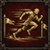
千涵
短坡冲刺
short_sprint主动步法 · 旧归属 C23 千涵
千涵：开场机动和分段恢复特点清楚；冲刺需先验证完整两步路径，疲劳恢复有条件且每轮有限。
旧效果与费用（历史设计）
3行动点、14疲劳，冷却三轮。沿同高合法空地最多移动两格，不能穿人，普通脱离攻击照常。落点的本次下一次单体近战命中＋8，行动结束失效。
恢复被动 · 旧归属 C23 千涵
千涵：开场机动和分段恢复特点清楚；冲刺需先验证完整两步路径，疲劳恢复有条件且每轮有限。
旧效果与费用（历史设计）
本次行动没有使用任何攻击、支援或专属主动技能，且结束时不邻接敌人，则恢复8疲劳，每轮一次。仅移动或待机可以满足，但跨多次待机仍只结算一次。

玩蛇
秦国的神
snake_read对手记录 · 旧归属 C25 玩蛇
玩蛇：记录对手、试招、变招的循环有辨识度；应沿用原武器单体攻击，限定疲劳优惠和削弱次数。
旧效果与费用（历史设计）
每轮首次被某敌人单体近战攻击后记住它，命中与否均可。下次对该敌人的单体近战命中＋6，出手即消耗；至下次自身行动结束失效，最多一个。

玩蛇
蛇形试招
snake_trial主动武器技 · 旧归属 C25 玩蛇
玩蛇：记录对手、试招、变招的循环有辨识度；应沿用原武器单体攻击，限定疲劳优惠和削弱次数。
旧效果与费用（历史设计）
4行动点、16疲劳，持单手近战武器，对相邻敌人打一击，武器生命与护甲伤害各为普通攻击的80%。命中后该敌人至下次行动结束近攻－6，同一敌人每轮只能受一次。

玩蛇
下一招换个路
next_path变招被动 · 旧归属 C25 玩蛇
玩蛇：记录对手、试招、变招的循环有辨识度；应沿用原武器单体攻击，限定疲劳优惠和削弱次数。
旧效果与费用（历史设计）
本次行动先以普通单体近战命中A，再以蛇形试招攻击不同敌人B时，蛇形试招少消耗4疲劳。只省疲劳，不复制第一次攻击，也不增加攻击次数。
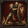
王大芷
站稳场子
hold_ground邻接被动 · 旧归属 C26 芷芷
王大芷：旧芷芷已确认对应王大芷。持盾护身后人的技能很贴合现星位；光环与其他盾卫取最高或不同类别，避免无上限堆防。
旧效果与费用（历史设计）
持盾且本次行动未移动时，至下次自身行动开始，邻接的其他友军各获近防＋3；离开邻接即时结束。本人不从此技能获得防御。

王大芷
撑住幕布
hold_curtain主动守势 · 旧归属 C26 芷芷
王大芷：旧芷芷已确认对应王大芷。持盾护身后人的技能很贴合现星位；光环与其他盾卫取最高或不同类别，避免无上限堆防。
旧效果与费用（历史设计）
4行动点、18疲劳，冷却两轮，须持盾。至下次自身行动开始，近防＋7并获得一次强制位移免疫；仅阻止一次推拉，不阻止伤害和眩晕。

王大芷
门口有我
door_mine近战被动 · 旧归属 C26 芷芷
王大芷：旧芷芷已确认对应王大芷。持盾护身后人的技能很贴合现星位；光环与其他盾卫取最高或不同类别，避免无上限堆防。
旧效果与费用（历史设计）
每轮一次，对邻接且与至少两名友军接壤的敌人进行普通单体近战时，命中＋5。只作用于该次普通攻击，不追加一次攻击。

瑶瑶牙
奶团吕布
lvbu_weapon武器被动 · 旧归属 C27 瑶瑶牙
瑶瑶牙：符合疲劳九星双手核心。旧主动和被动限定双手长柄，现开局伐木斧不满足；建议改支持双手近战且使用武器自身合法距离，不强行让所有双手武器打两格。
旧效果与费用（历史设计）
持双手长柄近战武器时，首次攻击未受本起源标记的敌人，武器生命与护甲伤害各＋10%，每名敌人每战一次。攻击尝试即记名，未命中也不能重刷。

瑶瑶牙
破口一击
breach_strike主动武器技 · 旧归属 C27 瑶瑶牙
瑶瑶牙：符合疲劳九星双手核心。旧主动和被动限定双手长柄，现开局伐木斧不满足；建议改支持双手近战且使用武器自身合法距离，不强行让所有双手武器打两格。
旧效果与费用（历史设计）
6行动点、24疲劳，冷却两轮，用双手长柄武器对合法距离敌人打一击，命中－5，伤害按普通单体攻击。命中后若目标可被推移且背后同高空格合法，则推开一格；否则只结算攻击。
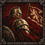
瑶瑶牙
回看旗子
look_flag站位被动 · 旧归属 C27 瑶瑶牙
瑶瑶牙：符合疲劳九星双手核心。旧主动和被动限定双手长柄，现开局伐木斧不满足；建议改支持双手近战且使用武器自身合法距离，不强行让所有双手武器打两格。
旧效果与费用（历史设计）
本人行动结束时若三格内有当前出战团长或战前代理，且本次至少移动过一格，决心＋6至下次自身行动开始。旗手不在场则不触发。

羊咩咩
弯道留力
curve_force移动被动 · 旧归属 C28 羊咩咩
羊咩咩：绕行与留下路径给伙伴形成特色。脚步标记只持续明确时段，不能通过反复进出同格刷恢复。
旧效果与费用（历史设计）
每次自身行动第二次普通同高平地移动少耗3疲劳，最低0；每轮一次。只优惠疲劳，不减少行动点，不作用于专属位移。

羊咩咩
贴线绕行
line_detour主动步法 · 旧归属 C28 羊咩咩
羊咩咩：绕行与留下路径给伙伴形成特色。脚步标记只持续明确时段，不能通过反复进出同格刷恢复。
旧效果与费用（历史设计）
3行动点、12疲劳，冷却两轮，沿相邻同高空地移动一格。若起点与终点都邻接同一敌人，该敌人的脱离攻击不会触发；其他敌人照常，定身不可用。
协作被动 · 旧归属 C28 羊咩咩
羊咩咩：绕行与留下路径给伙伴形成特色。脚步标记只持续明确时段，不能通过反复进出同格刷恢复。
旧效果与费用（历史设计）
本人结束行动后，记下本次普通移动最后离开的合法空格。首名本轮走入该格的友军恢复3疲劳，随后清除。地格被敌人占据或本轮结束也清除，最多一处。
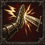
旧角色归档
反应半拍
half_react先手被动 · 旧归属 C29 一凹瑶
不对应当前成员，保留为机制和图标素材，不自动接入。
旧效果与费用（历史设计）
本轮尚未待机时，第一次普通单体近战对本轮尚未行动的敌人命中＋6。若敌人已经行动则不触发，每轮一次。
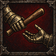
旧角色归档
接住这一棒
catch_baton主动协作 · 旧归属 C29 一凹瑶
不对应当前成员，保留为机制和图标素材，不自动接入。
旧效果与费用（历史设计）
2行动点、10疲劳，每轮一次。指定两格内一名其他友军，其本次下一次单体攻击命中＋5，至本轮结束；该友军若本轮已行动结束则不可选，同类接力不叠加。
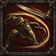
旧角色归档
鸭步回身
duck_turn反应被动 · 旧归属 C29 一凹瑶
不对应当前成员，保留为机制和图标素材，不自动接入。
旧效果与费用（历史设计）
每轮首次被单体近战未命中后，获得先攻＋10至下次自身行动结束。不会立刻插入行动队列，也不自动后撤。
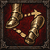
旧角色归档
脚下两步
two_steps位置被动 · 旧归属 C30 罗一可
不对应当前成员，保留为机制和图标素材，不自动接入。
旧效果与费用（历史设计）
本次行动只进行过一次普通移动且该步为同高平地时，下一次短矛普通近战命中＋5，出手消耗。额外移动和专属位移会取消。
主动技巧 · 旧归属 C30 罗一可
不对应当前成员，保留为机制和图标素材，不自动接入。
旧效果与费用（历史设计）
4行动点、15疲劳，冷却两轮，选择相邻敌人。按本人近攻＋5对其近防进行一次命中检定，不造成伤害；成功后推往由玩家预选的相邻同高空格，该格须也邻接目标原格且不更靠近施放者。不可推移者不能选。
疲劳被动 · 旧归属 C30 罗一可
不对应当前成员，保留为机制和图标素材，不自动接入。
旧效果与费用（历史设计）
当前积累疲劳不低于有效上限60%时，普通近战攻击的疲劳少2，最低0；每次都按出手前检查。只优惠疲劳，不解除体力上限。

bula
钱袋算清
purse_clear交易被动 · 旧归属 C31 bula
bula：预算与投掷特色完整。战前准备只给实际出战成员，交易折扣取最高而非叠加，不能靠预备队无限堆经济被动。
旧效果与费用（历史设计）
bula在常备队伍时，每日首次购买工具、药品或弹药的一笔价格降低5%，单笔最多省30克朗。与其他本起源交易折扣取最高，不影响出售、工资和招募。

bula
提前分好
budget_share战前准备 · 旧归属 C31 bula
bula：预算与投掷特色完整。战前准备只给实际出战成员，交易折扣取最高而非叠加，不能靠预备队无限堆经济被动。
旧效果与费用（历史设计）
每战部署时指定本人或一名其他出战投掷手，该角色本战首次普通投掷少耗5疲劳，最低0。不赠弹药、不制造一次攻击，受益者离场则作废。
投掷被动 · 旧归属 C31 bula
bula：预算与投掷特色完整。战前准备只给实际出战成员，交易折扣取最高而非叠加，不能靠预备队无限堆经济被动。
旧效果与费用（历史设计）
本人手持投掷武器只剩1发时，该发普通投掷命中＋6；使用后正常消耗弹药。补充弹药再到1发时每战最多再次触发一次，总计两次。
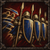
小宁
蓝旗布阵
blue_form开场被动 · 旧归属 C32 小宁
老蔡：归档最终版已把旧 C11 那组三个技能归给小宁 C32；建议将布阵与稳一手回收给盾卫老蔡，近战好牌也更适合他。属于归属调整提案，不能自动挪走小宁能力。 小宁：现组三技是老蔡遗留的布阵近战风格，与外星人、流口水和当前弩手星位关联弱。图标仍保留，个人技能建议另围绕异常观察／干扰构思；未替用户定案。
旧效果与费用（历史设计）
第一轮开始，自身与当时邻接的可行动友军先攻＋12，持续至第一轮结束。受益者按开场位置锁定；同类开场先攻取最高值，不额外获得行动点，也不在增援入场时再触发。
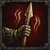
小宁
稳一手
steady_hand主动指挥 · 旧归属 C32 小宁
老蔡：归档最终版已把旧 C11 那组三个技能归给小宁 C32；建议将布阵与稳一手回收给盾卫老蔡，近战好牌也更适合他。属于归属调整提案，不能自动挪走小宁能力。 小宁：现组三技是老蔡遗留的布阵近战风格，与外星人、流口水和当前弩手星位关联弱。图标仍保留，个人技能建议另围绕异常观察／干扰构思；未替用户定案。
旧效果与费用（历史设计）
4行动点、18疲劳、1次团队号令。指定四格内最多四名可行动友军，近防＋6、决心＋6，持续两轮；每人另获一次强制推拉位移免疫，使用或到期后消失。攻击伤害和其她状态正常结算；不能与守门把同一次推拉重复计为两次免疫。

小宁
一张好牌
good_card配合被动 · 旧归属 C32 小宁
老蔡：归档最终版已把旧 C11 那组三个技能归给小宁 C32；建议将布阵与稳一手回收给盾卫老蔡，近战好牌也更适合他。属于归属调整提案，不能自动挪走小宁能力。 小宁：现组三技是老蔡遗留的布阵近战风格，与外星人、流口水和当前弩手星位关联弱。图标仍保留，个人技能建议另围绕异常观察／干扰构思；未替用户定案。
旧效果与费用（历史设计）
同轮有两名不同队友以单体武器攻击命中同一敌人后，持有者下一次对它的单体近战攻击命中＋10，每轮一次。须在本轮完成出手；不生成额外攻击，持续伤害不计入条件。
持盾被动 · 旧归属 C33 小胖
小胖徐不快乐：盾卫类旧机制可用，但名字缺街舞特点。建议加入节拍、步点或队形触发，使其与五名主盾卫区分；三项都缺对应旧自定义图标。
旧效果与费用（历史设计）
持盾且邻接至少一名可行动友军时，自身近防＋4。离开队友身边立即失效；不增加护甲或生命。
主动护卫 · 旧归属 C33 小胖
小胖徐不快乐：盾卫类旧机制可用，但名字缺街舞特点。建议加入节拍、步点或队形触发，使其与五名主盾卫区分；三项都缺对应旧自定义图标。
旧效果与费用（历史设计）
3行动点、12疲劳、冷却两轮。指定相邻一名可行动友军，使其近防＋4、决心＋4，持续至下轮结束；重复施放刷新持续时间，不叠加。成长后近防提升至＋6。
受击被动 · 旧归属 C33 小胖
小胖徐不快乐：盾卫类旧机制可用，但名字缺街舞特点。建议加入节拍、步点或队形触发，使其与五名主盾卫区分；三项都缺对应旧自定义图标。
旧效果与费用（历史设计）
每轮首次被单体武器攻击命中后，若仍可行动，恢复3点已积累疲劳。受黑旗每人每轮20点恢复上限约束；未命中或持续伤害不触发。
远攻被动 · 旧归属 C34 蔓越莓
蔓越莓：远程集火适合现星位；红线的命名与控制目标可体现用户确认的 S 特点，但不擅自扩写真人含义。三项都缺对应旧自定义图标。
旧效果与费用（历史设计）
对邻接至少一名友军的敌人进行普通单体远程武器攻击时，每轮首次命中检定获得远攻＋5。攻击尝试即耗掉本轮机会；不作用于范围攻击。
主动标记 · 旧归属 C34 蔓越莓
蔓越莓：远程集火适合现星位；红线的命名与控制目标可体现用户确认的 S 特点，但不擅自扩写真人含义。三项都缺对应旧自定义图标。
旧效果与费用（历史设计）
3行动点、10疲劳、冷却两轮。标记四格内一名可见敌人，持续两轮；下一次友军单体远程武器攻击对其远攻＋8，尝试后无论命中与否清除。蔓越莓同时只能保留一个记号。
协作被动 · 旧归属 C34 蔓越莓
蔓越莓：远程集火适合现星位；红线的命名与控制目标可体现用户确认的 S 特点，但不擅自扩写真人含义。三项都缺对应旧自定义图标。
旧效果与费用（历史设计）
本人每轮首次普通远程武器攻击命中邻接友军的敌人后，恢复2点已积累疲劳。受黑旗每人每轮20点恢复上限约束；未命中不触发。